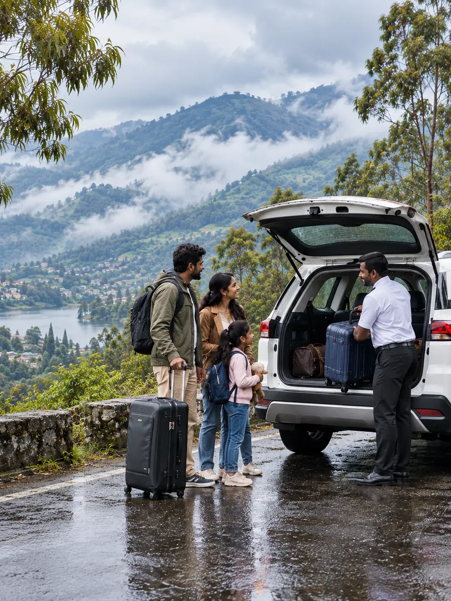
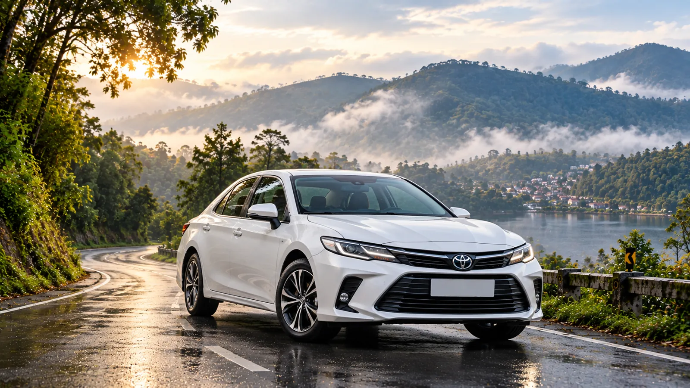
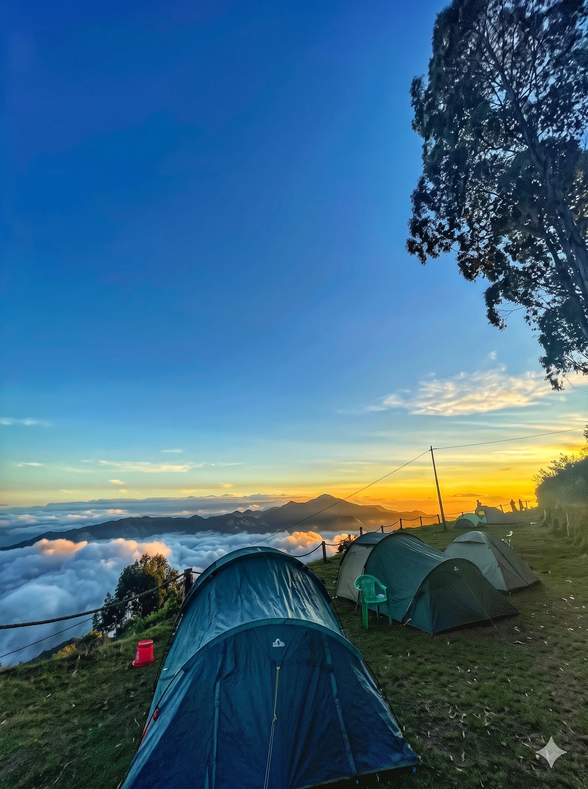

Kodaikanal Cabs for Sightseeing, Transfers and Airport Pickup
Cottages Kodaikanal runs a trusted kodaikanal cab service for sightseeing, outstation transfers and airport pickup, for families and groups, from ₹2,500 a day.
Full-day, ~8 hrs
Local Sightseeing
Book a sightseeing cab in Kodaikanal and your driver stays all day for the lake, Coaker's Walk and Pillar Rocks, with no fare to haggle over at any stop and no rush to leave.
The drive into or out of the hills to Madurai, Coimbatore or Dindigul, priced by distance, with tolls and permit fees already inside the quoted fare, so nothing changes later.
Your driver tracks the flight and waits at Madurai or Coimbatore arrivals, so a late landing never costs you the booking or leaves you stranded. Straight up to your stay.
Guests rarely need just one ride. A hill holiday usually means an airport run, a day around the viewpoints and a drive back down, and one desk that arranges all three saves you the chasing. Our team handles sightseeing, one-way or round-trip transfers and airport pickups from Madurai or Coimbatore, with the same drivers on every leg of the plan.
Most bookings pair a full-day sightseeing loop with an onward drop, or an airport pickup that rolls straight into a few days around town. Tell us the whole plan once and we price it as a single trip.
What You Get With a Cab in Kodaikanal
Airport pickup
Flight-tracked, so a delayed landing never leaves you waiting alone at arrivals.
+
Sightseeing days
Hatchback to tempo traveller, matched to your group size and the roads ahead.
=
One booking, one quote
Pair sightseeing with a transfer and pay one bundled rate, not two full fares.
Four ways guests usually book, depending on the trip and how early they plan. Each works alone, or you can stack two into a single quote.
Local Cabs
Kodaikanal local cab service for short hops inside town, like the lake, a dinner spot or your homestay to a viewpoint. Book on the spot or with hours' notice.
Full-Day Packages
A cab and driver held for around 8 hours to cover the main viewpoints at your own pace, with 80 km included and one clear price agreed before the engine starts.
Outstation Travels
One-way or round-trip drives to Madurai, Coimbatore, Dindigul and beyond, priced by distance, with tolls and permit fees already counted into your final quote.
Pre-Booking and Online Options
Share your dates and route on WhatsApp or by phone, and we lock in a vehicle and fare ahead of time so peak weeks and festival weekends never catch you out.
Use cases
Cabs in Kodaikanal for Sightseeing and Beyond
Four common use cases cover most requests. Choose one, or fold two together and ask for a single quote that covers the whole plan.
Full-day, ~8 hrs
Local Sightseeing
Kodaikanal local sightseeing cabs held all day for the main viewpoints, with stops wherever you choose and photo breaks that never feel rushed.
Best for
families & groups touring town
One-way or round trip
Outstation Transfer
A cab for the drive into or out of the hills, priced by distance, with Chennai to Kodaikanal cab runs on request too. Same driver for the return.
Covers
Coimbatore, Madurai, Dindigul & more

Flight-timed
Airport Pickup
Meet-and-greet at arrivals with your name on a board, a driver who knows the ghat road and no hanging around, whatever the hour or weather.
Covers
Madurai & Coimbatore airports

Premium upgrade
Luxury Cab
A higher-end sedan or SUV on request, with extra legroom and a smoother ride on long hill drives, plus a driver briefed on your comfort needs.
Best for
comfort-first days & long drives
Fares
Cab Rates in Kodaikanal and What They Cover
Local Sightseeing8 hrs / 80 km · hatchback for 3–4 pax · sedan and SUV on request
Indicative 2026 starting points, including the Kodaikanal sightseeing cab price for a standard day. Exact fares depend on your dates, distance and vehicle, and tempo traveller rates are quoted separately. The figure you receive on WhatsApp is the figure you pay. Get an exact quote →
Where to
Cab Hire in Kodaikanal: Where Your Cab Can Go
From the town's main viewpoints to the roads and airports linking Kodaikanal with Tamil Nadu, one cab covers the lot. Longer runs work too, and Bangalore to Kodaikanal cabs are available on request.
Kodaikanal LakeUsually the first stop each dayCoaker's WalkA quick add-on to the lake stopPillar RocksIncluded on every full-day planGuna CavesLocal drop available on request
Yes: SUV or tempo traveller seating for multi-generation groups, with room for grandparents and every bag
Fitted seatbelts and clear boot space for airport luggage runs, however many suitcases you carry
A local driver who sets a gentle pace on the bends for kids and elders
One cab for sightseeing and the onward transfer, so bags and family stay together
Good to know: share your flight number for airport pickups so the driver can adjust for delays. With young kids or plenty of luggage, ask for an SUV over a hatchback on outstation runs, and mention any special seating need while booking.
In the fare
What Does Cab Rental in Kodaikanal Include?
Included
Vehicle, fuel and driver for the whole booking
Tolls and permit fees on outstation routes
Flight tracking and meet-and-greet on airport pickups
Pickup and drop at your cottage, hotel or airport
Not included
Entry fees at viewpoints
Personal expenses and meals
Extra waiting time beyond what's agreed
Confirmed line by line in your quote, so a Kodaikanal cabs rental never ends with a surprise bill.
Seasons
Best Time for Cab Booking in Kodaikanal
Mar – May
Summer
Peak holiday weeks with demand across every booking type, so lock in your cab a few days ahead of your travel.
Jun – Sep
Monsoon
Quieter roads and easy availability, though transfers can run a little longer after heavy rain on the ghat road.
Oct – Nov
Autumn
A calm shoulder season with good availability, steady rates and clear views on the drive up and thinner crowds.
Dec – Feb
Winter
Busiest around Christmas, so reserve early, including a Kodaikanal to Bangalore cab for the return trip.
Three steps
Kodaikanal Cab Booking: How It Works
Tell usWhat you need, and the dates
ConfirmYour vehicle and fare today
RideWherever you're headed next
Why us
Why Choose the Best Cab Service in Kodaikanal?
In short, twelve years of arranging stays and rides in these hills means we have quoted and driven every route here. Unlike a Kodaikanal car rental, every cab comes with a local driver, and guests return to our Kodai cabs service for their next Kodai cab.
12 yrsOf Kodaikanal stays and rides
Same dayWhatsApp reply to every quote
ZeroHidden fees in a written quote
Vetted Drivers
Every driver is vetted and knows the ghat road, so fog and bends feel routine.
Routes We Have Driven
Our team has driven every route on this page long before quoting it to you.
One Local Desk
Real people reply on WhatsApp within the day, with no call centre in the way.
Guest reviews
What Our Guests Say
Our cabs and jeeps are run by the same family that hosts these guests.
★★★★★
We booked a family cottage for five of us and it never felt cramped. Staff arranged everything from bonfire wood to breakfast timing.
Priya R.Chennai
★★★★★
Traveled from Bengaluru for a college reunion — the group stay cottage fit all ten of us with room to spare.
Arjun K.Bengaluru
★★★★★
Our honeymoon stay had exactly the privacy we wanted — hills outside the window, a fireplace for the cold evenings.
Meena & KarthikCoimbatore
Find us
Where Are We Located?
Cottages Kodaikanal, Near Zion School Junction, MM Street, Lawsghat Road, Kodaikanal - 624101.
A single cab booking in Kodaikanal covers local sightseeing, an outstation transfer to or from a nearby city, or an airport pickup. You can combine them, and Cottages Kodaikanal prices the whole plan together as one trip.
Yes. Tell us both parts of your plan and we quote one combined rate for your Kodaikanal cabs instead of two separate bookings. The same driver can stay on, which keeps the day simple and the fare lower.
Cab rates in Kodaikanal include the vehicle, fuel and driver for your booking, plus tolls and permit fees on outstation routes. Entry tickets, personal expenses and waiting beyond the agreed time are billed separately.
Yes. Our Kodaikanal cab service tracks your flight and meets you at arrivals in Madurai or Coimbatore, then drives you straight up the ghat road to your stay, even when the plane lands late.
A cab in Kodaikanal is easiest to book and best priced in the monsoon and autumn months. December to February and the summer holidays are peak season, so reserve your vehicle a few days ahead.
Cab hire in Kodaikanal suits hatchbacks and sedans for 3 to 4 passengers, SUVs for 6 to 7 or heavy luggage, a luxury sedan for extra comfort, and tempo travellers for groups of 9 to 17.
Message your needs, dates and group size on WhatsApp. For Kodaikanal cab booking we confirm a vehicle and rate the same day, with no advance paperwork and no call centre standing in between.

Book a Cab in Kodaikanal
Sightseeing, transfers or airport pickup. One team, one booking, one quote.